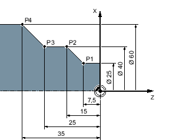
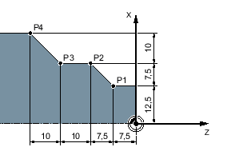

Beim Erstellen eines Arbeitsschritt-Programms können Sie Positionen im Absolut- oder Inkrementalmaß eingeben, je nachdem wie die Werkstückzeichnung bemaßt ist.
Sie können Absolut- und Inkrementalmaße auch gemischt verwenden, d.h. eine Koordinate im Absolutmaß, die andere im Inkrementalmaß eingeben.
Für die Planachse (hier X-Achse) ist in Maschinendaten festgelegt, ob im Absolut- bzw. Inkrementalmaß der Durchmesser oder Radius programmiert wird.
Beachten Sie hierzu bitte die Angaben des Maschinenherstellers.
Beim Absolutmaß beziehen sich alle Positionsangaben auf den Nullpunkt des aktiven Koordinatensystems.
Absolutmaß
Die Positionsangaben für die Punkte P1 bis P4 im Absolutmaß lauten bezogen auf den Nullpunkt:
P1: X25 Z-7.5
P2: X40 Z-15
P3: X40 Z-25
P4: X60 Z-35
Beim Inkrementalmaß, auch Kettenmaß genannt, bezieht sich eine Positionsangabe auf den jeweils vorher programmierten Punkt. D.h. der Eingabewert entspricht dem zu verfahrenden Weg. Im Regelfall spielt das Vorzeichen bei der Eingabe des Inkrementwertes keine Rolle, es wird nur der Betrag des Inkrementes ausgewertet. Bei einigen Parametern gibt das Vorzeichen allerdings die Verfahrrichtung an. Diese Ausnahmefälle sind in der Parametertabelle der einzelnen Funktionen gekennzeichnet.
Inkrementalmaß
Die Positionsangaben für die Punkte P1 bis P4 im Kettenmaß lauten:
P1: X12.5 Z-7.5 (bezogen auf den Nullpunkt)
P2: X7.5 Z-7.5 (bezogen auf P1)
P3:X0 Z-10 (bezogen auf P2)
P4: X10 Z-10 (bezogen auf P3)